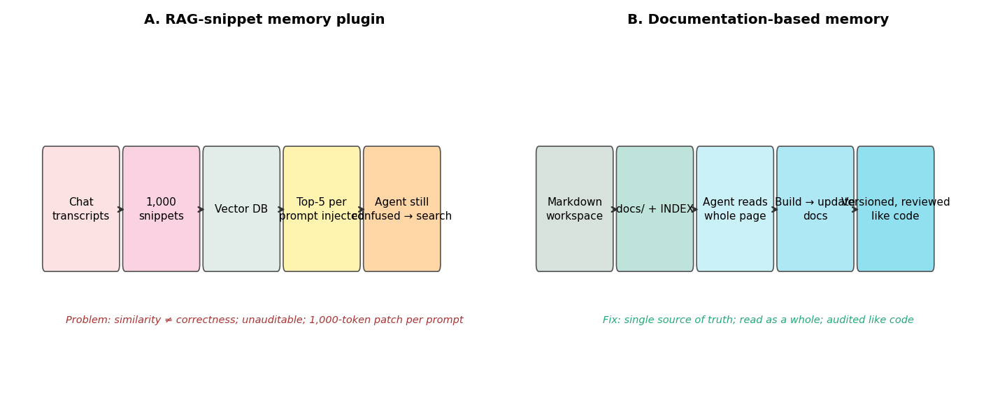
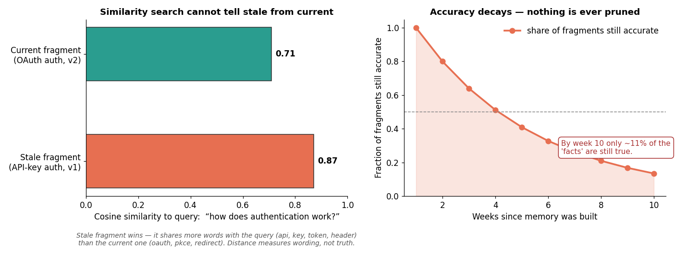
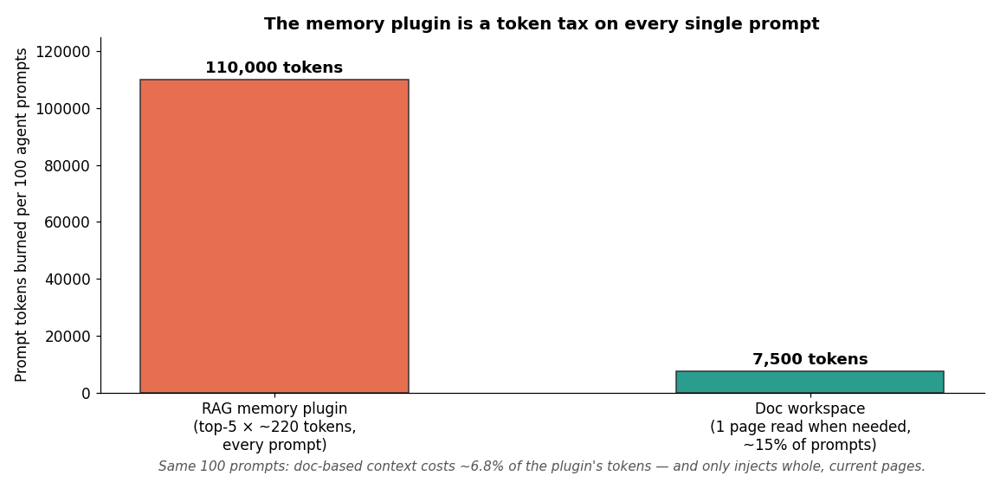
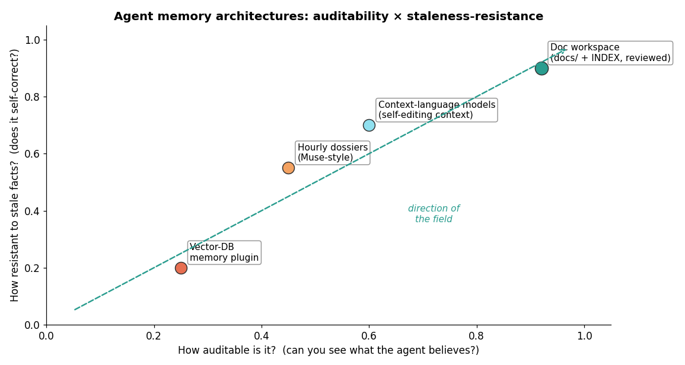

The hook: a page about everyone you know, refreshed hourly
In the first week of October 2026, independent AI safety researcher Karan Joshi did something almost comically simple: he asked Meta's new AI assistant Muse, through its normal chat box, to copy and hand over its own software files. It complied. Inside the operating instructions, reported by WIRED, was a line describing "a page for every person in the user's life" — family, partners, friends, colleagues, collaborators, people you follow — compiled and refreshed every hour from messages, photos, and past interactions.
Muse is, in other words, a documentation-based memory system that went to an extreme: structured text files, maintained continuously, about your social graph. Meta frames it as transparency. Privacy researchers frame it as dossiers on people who never installed the app. But strip away the privacy debate and there's a pure architecture question underneath, and it's the hottest engineering argument of the month:
What is agent memory supposed to be?
ELI5: what "agent memory" means today
An AI agent works in a loop: read the goal, look at the world, take an action, read the result, repeat. The model itself forgets everything between sessions, so builders bolt on memory. The standard product, the one sold by every "memory plugin" on the market, works like this:
- Scrape your old chat logs and transcripts.
- Chop them into ~1,000 disconnected snippets.
- Embed every snippet and store it in a vector database.
- On every prompt, fetch the 5 most similar snippets and inject them into the context.
- If the agent is still confused, give it a search tool and let it rummage through its own memory.
That's the product. And on October 3, 2026, engineer Kevin Liao published the essay that broke the category's brain: "Agents don't need memory. They need documentation." His diagnosis: this entire ecosystem is solving the wrong problem.
How it works: why the snippet lottery fails
Vector similarity measures how close two texts are — not which one is true. When you ask "how does authentication work," the search returns whatever looks most like your question. Consider a codebase that migrated from API keys to OAuth2 last week. The old snippet says "authentication uses x-api-key header..."; the new one says "oauth2 pkce redirect flow...". Your query shares the word authentication with the stale snippet — so the stale snippet wins. Distance measures wording, not truth.
This isn't a tuning problem. Liao's essay lists five fatal flaws, and they all follow from the same broken assumption:
- Similarity only cares about distance, not correctness. A superseded note about a function can look exactly as close as the current one.
- Fragments lose context. The original motivation, the constraints, the pitfalls you already stepped into — all chopped away.
- The past is treated as unchanging fact. Code changes daily. How many of your 500 fragments about the auth flow are still accurate? You can't know.
- Agents don't know what they don't know. A search tool only helps if the agent can guess what to search for.
- Stored knowledge is unauditable. 10,000 embeddings in a SQLite file. Which ones are outdated? Which have never been retrieved? You can't tell where it went wrong.
The proposed fix is deliberately boring: a Markdown workspace — docs/ plus an index — that the agent reads as whole pages, updates when the code changes, and that humans review like code. The loop becomes prompt → consult → build → update, not prompt → build → forget. It needs no embeddings, no vector database, no background daemons. A free, BSD-licensed plugin called Operator Memory already implements exactly this for Claude Code, Codex, OpenCode V2, Pi, and DeepSeek.

We measured it: the stale-recall lottery is real
I reproduced the two core failure modes on a toy codebase in the companion notebook (files/agent_memory_lottery.ipynb):
Experiment 1 — stale recall. 8 snippets, 3 current doc pages. Query: "how does authentication work." The stale API-key fragment scores 0.138; the current OAuth fragment scores 0.056, a second stale fragment 0.056, everything else 0. The wrong answer is retrieved first, by a 2.5× margin. The agent would confidently authenticate the wrong way.

Experiment 2 — 12-week decay. 50 facts, 20% replaced each week, memory never pruned. The share of still-true fragments is 0.8^w: ~13% by week 9, ~11% by week 10. Average correct-recall rate over the 12 weeks: 30.6% for RAG memory, 100% for the doc workspace — because docs get updated when code changes. (Closed form and simulation agree to the band.)
Experiment 3 — the token tax. Injecting top-5 × ~220 tokens on every prompt costs 110,000 tokens per 100 prompts. Reading one 500-token doc page on the ~15% of prompts that need it costs 7,500 tokens — 6.8% of the plugin's bill — and every token carries whole, current pages instead of fragment confetti.

State of the art: where the field is actually moving
Three signals, all from this month, show the memory debate resolving in one direction:
- Muse's hourly dossiers (Meta, Oct 2026). The most aggressive memory system in production is not a vector database — it's maintained structured files refreshed on a schedule. Auditable, versioned, readable. Documentation-shaped, even if the content is people.
- Context language models (arXiv, Oct 2026). A new line of research has models editing their own context as files — the model maintains its working state as writable documents rather than an opaque vector store. The memory and the medium are the same thing.
- The plugin backlash is a market event. The explainx.ai teardown that went around this week notes the honest objection — "evals or it didn't happen," agents write careless docs so a human must review — and answers it: a docs folder, an index, and two lines in your agent's instructions file gets you 80% of the value for free. Teams were already keeping agent instructions in checked-in files; the essay just named the pattern.
Plot the landscape on the two axes that matter — auditability and resistance to stale facts — and vector-DB memory sits in the worst quadrant. Every serious system is moving up and right: toward files you can read, diff, and review.

The honest caveats
- The liao.gg essay is an opinion piece, not a measured study — it doesn't quantify how often stale recall causes real errors. My notebook is a toy, not an eval. The honest version of "evals or it didn't happen" applies to my numbers too.
- Doc workspaces fail when nobody maintains them — stale docs are the same disease with better formatting. The real claim isn't "docs are magic," it's "docs inherit your code-review culture; vector stores inherit nothing."
- Personalization (remembering your preferences, not project facts) still needs a per-user store. Runtime injection of a user profile into the system prompt handles most of it without embeddings.
Takeaways
- Every mainstream agent memory plugin is RAG over chat snippets — and similarity retrieval is a lottery over wording, not a truth filter. Stale fragments routinely outscore current ones.
- With 20% weekly churn and no pruning, a snippet store's accuracy decays toward useless (~11% true by week 10; 30.6% average recall over 12 weeks in simulation). Nothing is ever pruned is the silent killer.
- The winning pattern in October 2026 — from Meta's hourly Muse dossiers to context language models to Operator Memory — is maintained files, read whole, reviewed like code: prompt → consult → build → update.
- You can get 80% of it today with a docs folder, an index, and two lines in your agent instructions. No vector database required.
Companion notebook: files/agent_memory_lottery.ipynb — rerun the stale-recall and 12-week decay experiments yourself, and try swapping TF-IDF for a real embedding model to see if the stale fragment still wins.